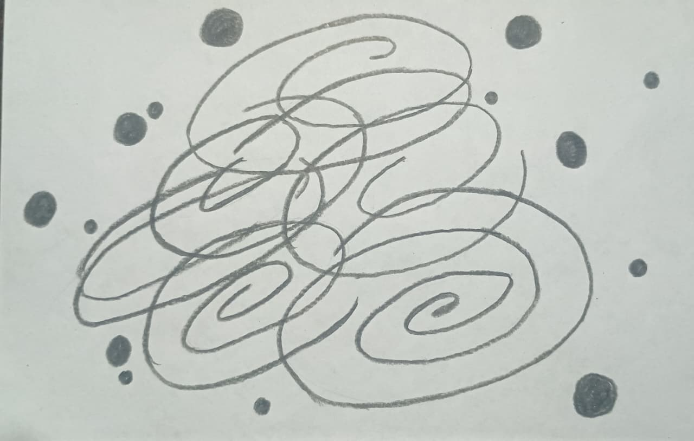

Tráfico matutino
El flujo de vehículos en hora pico
La ciudad se despierta con el ruido de los carros. Entre el rugido de los motores y el afán de las personas, se siente esa energía del mundo arrancando el día.
La sinfonía caótica del concreto y el movimiento constante
4 experiencias sonoras
La ciudad es una sinfonía constante. Desde el despertar hasta el anochecer, nos envuelve un manto sonoro que define nuestra experiencia urbana. Estos sonidos, muchas veces ignorados, son los latidos de la metrópoli moderna.

La ciudad se despierta con el ruido de los carros. Entre el rugido de los motores y el afán de las personas, se siente esa energía del mundo arrancando el día.
La ciudad se despierta con el ruido de los carros. Entre el rugido de los motores y el afán de las personas, se siente esa energía del mundo arrancando el día.
La ciudad se despierta con el ruido de los carros. Entre el rugido de los motores y el afán de las personas, se siente esa energía del mundo arrancando el día.